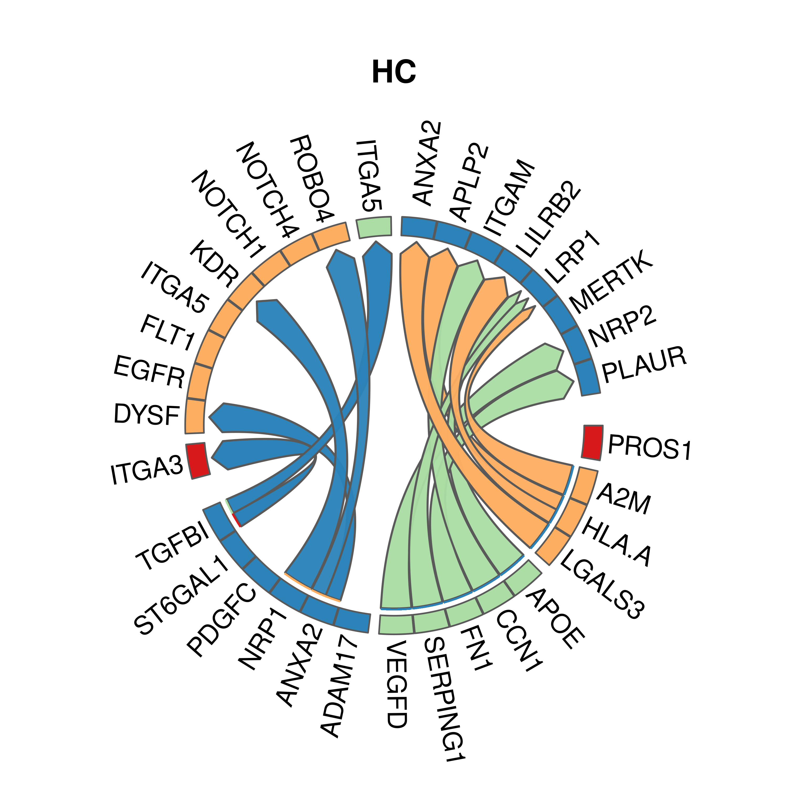
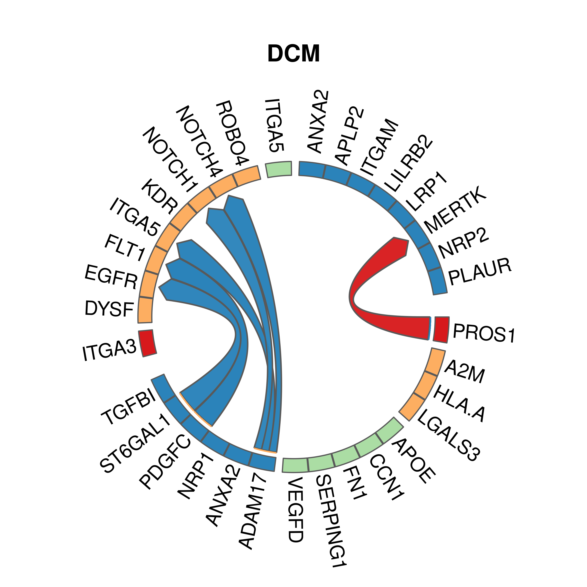
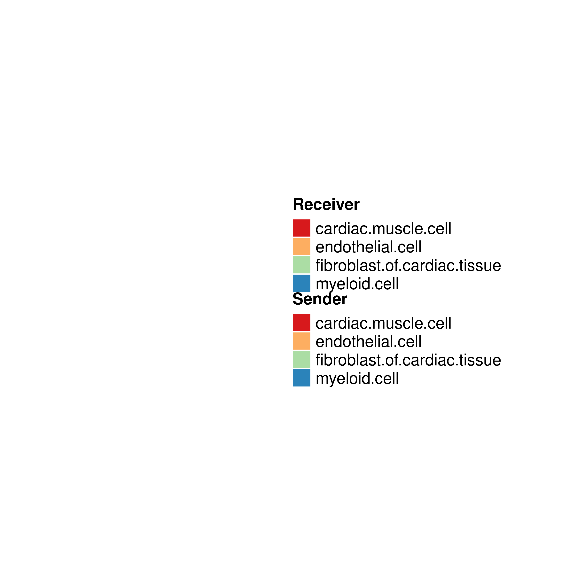
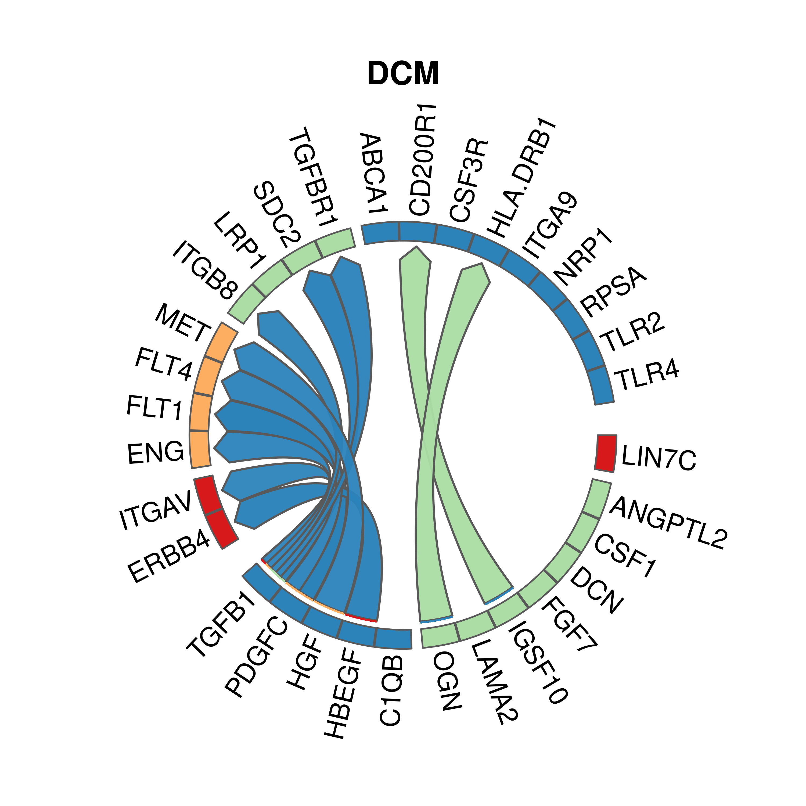
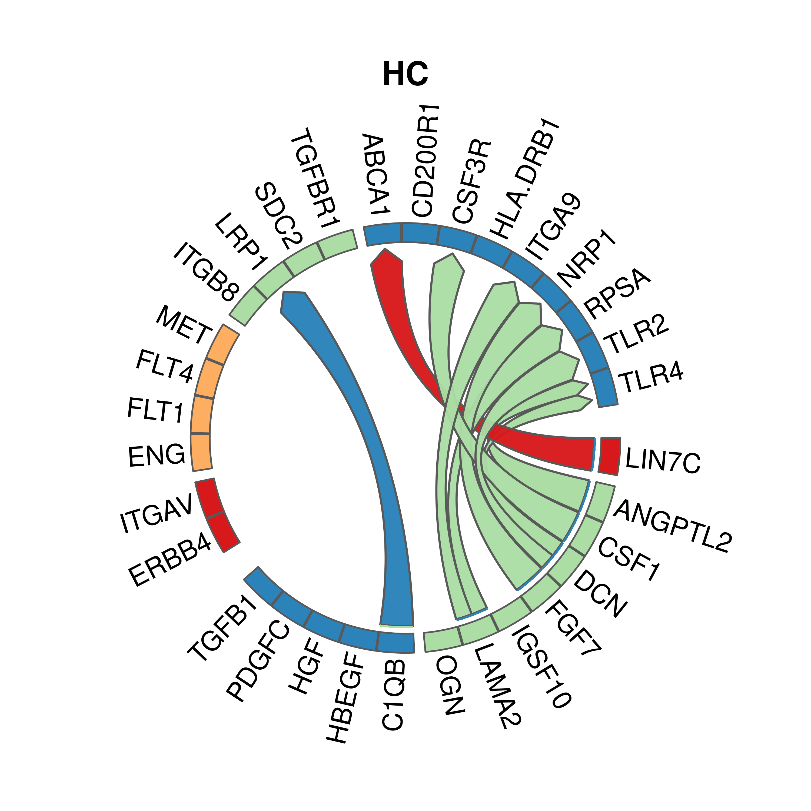
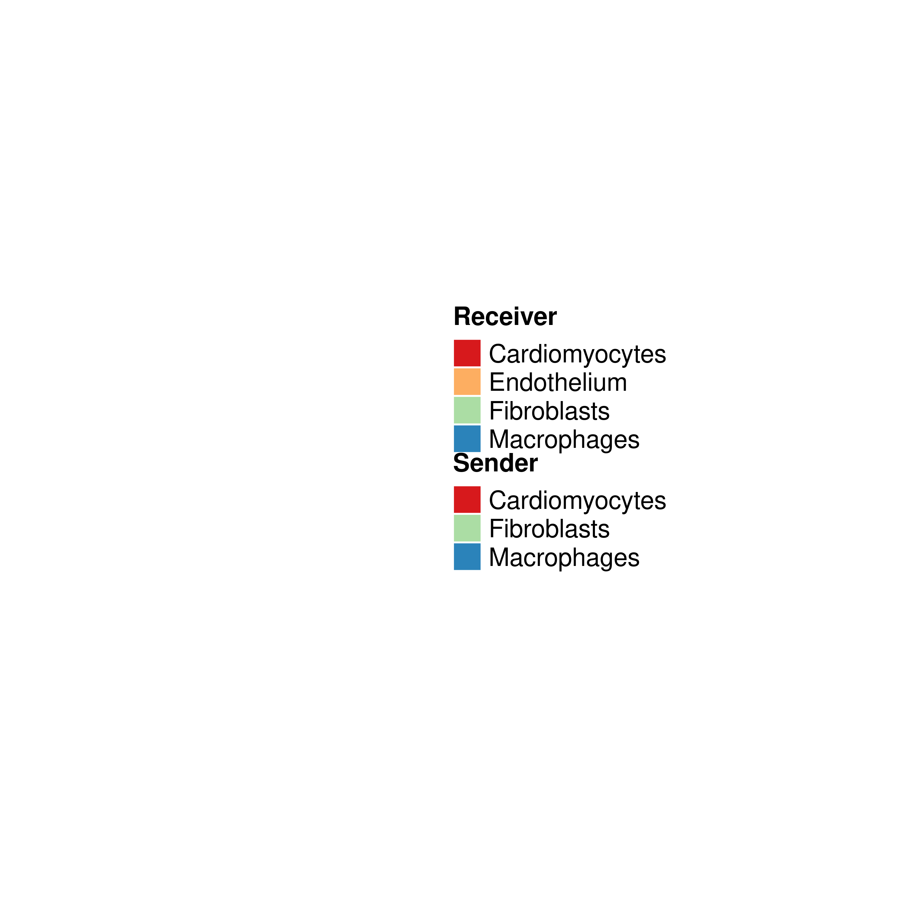

Cell cell communication analysis using MultiNicheNet
GinoBonazza (ginoandrea.bonazza@usz.ch)
20 November, 2025
Last updated: 2025-11-20
Checks: 7 0
Knit directory: DCM_snRNAseq/
This reproducible R Markdown analysis was created with workflowr (version 1.7.1). The Checks tab describes the reproducibility checks that were applied when the results were created. The Past versions tab lists the development history.
Great! Since the R Markdown file has been committed to the Git repository, you know the exact version of the code that produced these results.
Great job! The global environment was empty. Objects defined in the global environment can affect the analysis in your R Markdown file in unknown ways. For reproduciblity it’s best to always run the code in an empty environment.
The command set.seed(20240606) was run prior to running
the code in the R Markdown file. Setting a seed ensures that any results
that rely on randomness, e.g. subsampling or permutations, are
reproducible.
Great job! Recording the operating system, R version, and package versions is critical for reproducibility.
Nice! There were no cached chunks for this analysis, so you can be confident that you successfully produced the results during this run.
Great job! Using relative paths to the files within your workflowr project makes it easier to run your code on other machines.
Great! You are using Git for version control. Tracking code development and connecting the code version to the results is critical for reproducibility.
The results in this page were generated with repository version 0313895. See the Past versions tab to see a history of the changes made to the R Markdown and HTML files.
Note that you need to be careful to ensure that all relevant files for
the analysis have been committed to Git prior to generating the results
(you can use wflow_publish or
wflow_git_commit). workflowr only checks the R Markdown
file, but you know if there are other scripts or data files that it
depends on. Below is the status of the Git repository when the results
were generated:
Ignored files:
Ignored: .Rhistory
Ignored: .Rproj.user/
Ignored: output/CellChat/
Ignored: output/Cell_cell_communication_Macrophages/
Ignored: output/Chaffin_2022/
Ignored: output/Comparison_RV_bulk_RNAseq/
Ignored: output/Figures_manuscript/
Ignored: output/Koenig_2022/
Ignored: output/SSc_PAH/
Ignored: output/Variance_partitioning/
Untracked files:
Untracked: Chaffin_wilcox.csv
Untracked: GRCh38-2020-A_build/
Untracked: Koenig_wilcox.csv
Untracked: Pseudobulk_all.csv
Untracked: Pseudobulk_byCellType_wilcox.csv
Untracked: analysis/Chaffin_2022.Rmd
Untracked: analysis/Comparison_RV_bulk_RNAseq.Rmd
Untracked: analysis/DA_DE_all_cell_types_and_parameters.Rmd
Untracked: analysis/DE_Group_all_cell_types.Rmd
Untracked: analysis/EC_capillary_angiogenic_boxplot_stats.csv
Untracked: analysis/Endothelial_cells_Koenig_Reichart.rmd
Untracked: analysis/Endothelial_cells_SGLT2_I.Rmd
Untracked: analysis/Endothelial_cells_subclustering.Rmd
Untracked: analysis/Endothelial_cells_subclustering.rmd
Untracked: analysis/Fibroblasts_DA_DE_26.Rmd
Untracked: analysis/Genes_Luxembourg.Rmd
Untracked: analysis/HC_DEGs_clustering.Rmd
Untracked: analysis/Koenig_2022.Rmd
Untracked: analysis/Lymphocytes_subclustering.Rmd
Untracked: analysis/Macrophages_subclustering.Rmd
Untracked: analysis/Mass_Spec_RV_dysf.Rmd
Untracked: analysis/Mural_cells_subclustering.Rmd
Untracked: analysis/Olink_RV_dysf.Rmd
Untracked: analysis/Olink_SSc_PAH.Rmd
Untracked: analysis/Olink_SSc_PAH_draft.Rmd
Untracked: analysis/Pseudobulk_all.csv
Untracked: analysis/Pseudobulk_byCellType_facetGrid.pdf
Untracked: analysis/Pseudobulk_byCellType_filtered_wrap3col.pdf
Untracked: analysis/Pseudobulk_byCellType_filtered_wrap3col_proportional.pdf
Untracked: analysis/Pseudobulk_byCellType_wilcox.csv
Untracked: analysis/Pseudobulk_byCellType_wilcox.filtered.csv
Untracked: analysis/Reichart_wilcox.csv
Untracked: analysis/Selection_genes_histology.Rmd
Untracked: analysis/TOM/
Untracked: analysis/UntitledR.R
Untracked: analysis/VennDiagram.2024-09-16_14-12-56.160498.log
Untracked: analysis/VennDiagram.2024-09-16_14-13-17.340014.log
Untracked: analysis/VennDiagram.2024-09-16_14-13-57.942673.log
Untracked: analysis/VennDiagram.2024-09-16_14-22-50.621507.log
Untracked: analysis/VennDiagram.2024-09-16_14-24-47.010131.log
Untracked: analysis/VennDiagram.2024-09-18_11-22-29.278827.log
Untracked: analysis/VennDiagram.2025-03-25_17-41-35.50458.log
Untracked: analysis/VennDiagram.2025-03-25_17-41-41.199096.log
Untracked: analysis/VennDiagram.2025-03-25_17-41-59.64245.log
Untracked: analysis/VennDiagram.2025-03-25_17-45-11.922474.log
Untracked: analysis/VennDiagram.2025-03-25_17-50-36.483812.log
Untracked: analysis/VennDiagram.2025-03-25_17-56-46.244322.log
Untracked: analysis/VennDiagram.2025-03-25_17-58-30.74362.log
Untracked: analysis/VennDiagram.2025-03-26_15-54-09.244636.log
Untracked: analysis/VennDiagram.2025-06-11_14-53-30.499963.log
Untracked: analysis/ec_Reichart_logCPM.csv
Untracked: analysis/omnipathr-log/
Untracked: code/Add_metadata.R
Untracked: code/Check DYSF.R
Untracked: code/Clustering_genes.R
Untracked: code/DE_5_percent.Rmd
Untracked: code/DE_5_percent.html
Untracked: code/DE_5_percent/
Untracked: code/DE_CM_test1.R
Untracked: code/DE_no_401.Rmd
Untracked: code/DE_no_401.html
Untracked: code/DE_no_401/
Untracked: code/Differential abundance test1.R
Untracked: code/Differential_Expression_edgeR_All.Rmd
Untracked: code/Differential_Expression_edgeR_All_2.Rmd
Untracked: code/Differential_Expression_edgeR_All_2.html
Untracked: code/Differential_Expression_edgeR_All_Age.Rmd
Untracked: code/Differential_Expression_edgeR_All_Age_2.Rmd
Untracked: code/Differential_Expression_edgeR_All_Age_2.html
Untracked: code/Differential_Expression_edgeR_All_groups.Rmd
Untracked: code/Differential_Expression_edgeR_All_groups.html
Untracked: code/Differential_Expression_edgeR_All_groups_2.Rmd
Untracked: code/Differential_Expression_edgeR_All_groups_2.html
Untracked: code/Differential_Expression_edgeR_All_groups_3.Rmd
Untracked: code/Differential_Expression_edgeR_All_groups_3.html
Untracked: code/PCA and CCA analysis test.R
Untracked: code/Pseudobulk DCM HC.R
Untracked: code/Published_heart_datasets_RV_vs_LV.Rmd
Untracked: code/QC_integration_annotation_orig.Rmd
Untracked: code/Removed_chunks.Rmd
Untracked: code/UpSet_plot_DEGs.Rmd
Untracked: code/Volcano_highlighted_genes.R
Untracked: code/ezInteractiveTable.Rmd
Untracked: code/ezInteractiveTable.html
Untracked: code/old.R
Untracked: data/Cellbender_output/
Untracked: data/Cellranger_output/
Untracked: data/DCM_Clinical_data.xlsx
Untracked: data/DCM_Clinical_data_26.xlsx
Untracked: data/DCM_Clinical_data_30.xlsx
Untracked: data/Homo_sapiens.GRCh38.93.gtf
Untracked: data/Human_plasma_proteome.xlsx
Untracked: data/Massons_quantification.xlsx
Untracked: data/Published_datasets/
Untracked: data/Raw/
Untracked: data/SSc-PAH/
Untracked: data/gencode.v46.chr_patch_hapl_scaff.annotation.gtf
Untracked: data/gencode.v46.chr_patch_hapl_scaff.basic.annotation.gtf
Untracked: data/refdata-gex-GRCh38-2020-A/
Untracked: omnipathr-log/
Untracked: output/CM_lncRNAs/
Untracked: output/Cardiomyocytes_DA_DE/
Untracked: output/Cardiomyocytes_subclustering/
Untracked: output/Cardiomyocytes_subclustering_26/
Untracked: output/Cell_cell_communication/
Untracked: output/Cell_cell_communication_LV/
Untracked: output/Cell_cell_communication_LV2/
Untracked: output/Comparison_LV/
Untracked: output/DA_DE_all_cell_types_and_parameters/
Untracked: output/DE_Fibrosis_all_cell_types/
Untracked: output/DE_Group_all_cell_types/
Untracked: output/DE_all_cell_types_mPAP/
Untracked: output/DE_mPAP_all_cell_types/
Untracked: output/Differential_expression_edgeR_All/
Untracked: output/Differential_expression_edgeR_All_Age/
Untracked: output/Dysferlin/
Untracked: output/Endothelial_cells_Koenig_Reichart/
Untracked: output/Endothelial_cells_SGLT2_I/
Untracked: output/Endothelial_cells_published_datasets/
Untracked: output/Endothelial_cells_subclustering/
Untracked: output/Fibroblasts_DA_DE_26/
Untracked: output/Fibroblasts_subclustering/
Untracked: output/Genes_Luxembourg/
Untracked: output/HC_DEGs_clustering/
Untracked: output/LV_Klaudia/
Untracked: output/Lymphocytes_subclustering/
Untracked: output/Macrophages_subclustering/
Untracked: output/Mass_Spec_RV_dysf/
Untracked: output/Mural_cells_subclustering/
Untracked: output/Olink_RV_dysf/
Untracked: output/Olink_SSc_PAH/
Untracked: output/Olink_SSc_PAH_draft/
Untracked: output/QC_integration_annotation/
Untracked: output/Reichart_DE_DCMvsHC/
Untracked: output/Selection_genes_histology/
Untracked: output/UntitledR.R
Untracked: reference_sources/
Unstaged changes:
Modified: analysis/CM_lncRNAs.Rmd
Modified: analysis/Comparison_LV.Rmd
Modified: analysis/DE_mPAP_all_cell_types.Rmd
Deleted: analysis/Differential_Expression_edgeR_All.Rmd
Deleted: analysis/Differential_Expression_edgeR_All_Age.Rmd
Modified: analysis/Dysferlin.Rmd
Modified: analysis/Endothelial_cells_published_datasets.rmd
Modified: analysis/Fibroblasts_subclustering.Rmd
Modified: analysis/Genes_Luxembourg_2.Rmd
Modified: analysis/LV_Klaudia.Rmd
Modified: analysis/Reichart_DE_DCMvsHC.Rmd
Modified: analysis/SSc_PAH.Rmd
Note that any generated files, e.g. HTML, png, CSS, etc., are not included in this status report because it is ok for generated content to have uncommitted changes.
These are the previous versions of the repository in which changes were
made to the R Markdown
(analysis/Cell_cell_communication_Macrophages.Rmd) and HTML
(docs/Cell_cell_communication_Macrophages.html) files. If
you’ve configured a remote Git repository (see
?wflow_git_remote), click on the hyperlinks in the table
below to view the files as they were in that past version.
| File | Version | Author | Date | Message |
|---|---|---|---|---|
| Rmd | 0313895 | GinoBonazza | 2025-11-20 | wflow_publish("analysis/Cell_cell_communication_Macrophages.Rmd") |
| html | cbdc216 | GinoBonazza | 2025-11-20 | Build site. |
| Rmd | 2131c64 | GinoBonazza | 2025-11-20 | wflow_publish("analysis/Cell_cell_communication_Macrophages.Rmd") |
Setup
# Get current file name to make folder
current_file <- "Cell_cell_communication_Macrophages"
# Load libraries
library(here)
library(readr)
library(readxl)
library(xlsx)
library(Seurat)
library(DropletUtils)
library(Matrix)
library(scDblFinder)
library(scCustomize)
library(dplyr)
library(ggplot2)
library(magrittr)
library(tidyverse)
library(reshape2)
library(S4Vectors)
library(SingleCellExperiment)
library(pheatmap)
library(png)
library(gridExtra)
library(knitr)
library(scales)
library(RColorBrewer)
library(Matrix.utils)
library(tibble)
library(ggplot2)
library(scater)
library(patchwork)
library(statmod)
library(ArchR)
library(clustree)
library(harmony)
library(gprofiler2)
library(clusterProfiler)
library(org.Hs.eg.db)
library(AnnotationHub)
library(ReactomePA)
library(statmod)
library(edgeR)
library(speckle)
library(EnhancedVolcano)
library(decoupleR)
library(OmnipathR)
library(dorothea)
library(enrichplot)
library(png)
library(reactable)
library(UpSetR)
library(ComplexHeatmap)
library(rtracklayer)
library(cowplot)
library(nichenetr)
library(multinichenetr)
library(muscat)
#Output paths
output_dir_data <- here::here("output", current_file)
if (!dir.exists(output_dir_data)) dir.create(output_dir_data)
if (!dir.exists(here::here("docs", "figure"))) dir.create(here::here("docs", "figure"))
output_dir_figs <- here::here("docs", "figure", paste0(current_file, ".Rmd"))
if (!dir.exists(output_dir_figs)) dir.create(output_dir_figs)Reichart
Load seurat object
Reichart <- readRDS("/scratch/gbonaz/Heart_datasets/Reichart_2022/DCM_ACM_heart_cell_atlas.rds")
Reichart_gene_names <- data.frame(
ensembl_id = rownames(Reichart),
gene_symbol = Reichart@assays[["RNA"]]@meta.features$feature_name
)
rownames(Reichart@assays[["RNA"]]@data) <- Reichart@assays[["RNA"]]@meta.features$feature_name
rownames(Reichart@assays[["RNA"]]@counts) <- Reichart@assays[["RNA"]]@meta.features$feature_name
Idents(Reichart) <- Reichart$cell_typeClinical_data <- read_excel("/scratch/gbonaz/Heart_datasets/Reichart_2022/Reichart_et_al_Science_2022_Selected_clinical_info.xlsx")
add_metadata <- left_join(Reichart[["donor_id"]], Clinical_data)
row.names(add_metadata) <- row.names(Reichart[[]])
Reichart <- AddMetaData(Reichart, metadata = add_metadata)
rm(add_metadata, Clinical_data)Reichart <- subset(
Reichart,
disease %in% c("dilated cardiomyopathy", "normal") &
tissue == "heart left ventricle" &
cell_type != "unknown"
)
table(Reichart$cell_type, Reichart$disease)
non-compaction cardiomyopathy
mast cell 0
endothelial cell 0
adipocyte 0
lymphocyte 0
cardiac muscle cell 0
myeloid cell 0
fibroblast of cardiac tissue 0
mural cell 0
cardiac neuron 0
unknown 0
dilated cardiomyopathy
mast cell 259
endothelial cell 38433
adipocyte 233
lymphocyte 4923
cardiac muscle cell 69150
myeloid cell 19843
fibroblast of cardiac tissue 35353
mural cell 47939
cardiac neuron 2819
unknown 0
arrhythmogenic right ventricular cardiomyopathy
mast cell 0
endothelial cell 0
adipocyte 0
lymphocyte 0
cardiac muscle cell 0
myeloid cell 0
fibroblast of cardiac tissue 0
mural cell 0
cardiac neuron 0
unknown 0
normal
mast cell 495
endothelial cell 10018
adipocyte 396
lymphocyte 842
cardiac muscle cell 70134
myeloid cell 4061
fibroblast of cardiac tissue 20300
mural cell 25497
cardiac neuron 999
unknown 0Reichart@meta.data <- Reichart@meta.data %>%
mutate(Group_CCC = case_when(
disease == "normal" ~ "HC",
disease == "dilated cardiomyopathy" ~ "DCM"
))
Reichart@meta.data$cell_type_2 <- make.names(Reichart@meta.data$cell_type)
Reichart@meta.data %>%
dplyr::select(Group_CCC, donor_id) %>%
distinct() %>%
dplyr::count(Group_CCC) Group_CCC n
1 DCM 50
2 HC 18organism = "human"
if(organism == "human"){
lr_network_all =
readRDS(url(
"https://zenodo.org/record/10229222/files/lr_network_human_allInfo_30112033.rds"
)) %>%
mutate(
ligand = convert_alias_to_symbols(ligand, organism = organism),
receptor = convert_alias_to_symbols(receptor, organism = organism))
lr_network_all = lr_network_all %>%
mutate(ligand = make.names(ligand), receptor = make.names(receptor))
lr_network = lr_network_all %>%
distinct(ligand, receptor)
ligand_target_matrix = readRDS(url(
"https://zenodo.org/record/7074291/files/ligand_target_matrix_nsga2r_final.rds"
))
colnames(ligand_target_matrix) = colnames(ligand_target_matrix) %>%
convert_alias_to_symbols(organism = organism) %>% make.names()
rownames(ligand_target_matrix) = rownames(ligand_target_matrix) %>%
convert_alias_to_symbols(organism = organism) %>% make.names()
lr_network = lr_network %>% filter(ligand %in% colnames(ligand_target_matrix))
ligand_target_matrix = ligand_target_matrix[, lr_network$ligand %>% unique()]
} else if(organism == "mouse"){
lr_network_all = readRDS(url(
"https://zenodo.org/record/10229222/files/lr_network_mouse_allInfo_30112033.rds"
)) %>%
mutate(
ligand = convert_alias_to_symbols(ligand, organism = organism),
receptor = convert_alias_to_symbols(receptor, organism = organism))
lr_network_all = lr_network_all %>%
mutate(ligand = make.names(ligand), receptor = make.names(receptor))
lr_network = lr_network_all %>%
distinct(ligand, receptor)
ligand_target_matrix = readRDS(url(
"https://zenodo.org/record/7074291/files/ligand_target_matrix_nsga2r_final_mouse.rds"
))
colnames(ligand_target_matrix) = colnames(ligand_target_matrix) %>%
convert_alias_to_symbols(organism = organism) %>% make.names()
rownames(ligand_target_matrix) = rownames(ligand_target_matrix) %>%
convert_alias_to_symbols(organism = organism) %>% make.names()
lr_network = lr_network %>% filter(ligand %in% colnames(ligand_target_matrix))
ligand_target_matrix = ligand_target_matrix[, lr_network$ligand %>% unique()]
}[1] "following are the official gene symbols of input aliases: "
symbol alias
1 YARS1 YARS
[1] "all input symbols were official symbols"
[1] "all input symbols were official symbols"
[1] "all input symbols were official symbols"group_id = "Group_CCC"
sample_id = "donor_id"
celltype_id = "cell_type_2"
covariates = NA
batches = NAcontrasts_oi = c("'DCM-HC','HC-DCM'")
contrast_tbl = tibble(contrast =
c("DCM-HC","HC-DCM"),
group = c("DCM","HC"))senders_oi = SummarizedExperiment::colData(sce)[,celltype_id] %>% unique()
receivers_oi = SummarizedExperiment::colData(sce)[,celltype_id] %>% unique()
sce = sce[, SummarizedExperiment::colData(sce)[,celltype_id] %in%
c(senders_oi, receivers_oi)
]conditions_keep = c("HC", "DCM")
sce = sce[, SummarizedExperiment::colData(sce)[,group_id] %in%
conditions_keep
]multinichenet_output <- readRDS(here::here("output", "Cell_cell_communication_LV", "multinichenet_output_Reichart.rds"))Myeloid cells
celltypes_oi <- c(
"myeloid.cell",
"fibroblast.of.cardiac.tissue",
"cardiac.muscle.cell",
"endothelial.cell"
)prioritized_tbl_oi_all <- get_top_n_lr_pairs(
multinichenet_output$prioritization_tables,
top_n = 200, # can keep 50 if you want, but 200 then re-rank is safer
senders_oi = celltypes_oi,
receivers_oi = celltypes_oi,
rank_per_group = FALSE
)celltypes_oi <- c(
"fibroblast.of.cardiac.tissue",
"cardiac.muscle.cell",
"endothelial.cell"
)prioritized_tbl_oi_all <- prioritized_tbl_oi_all %>%
dplyr::filter(
# myeloid sending
(sender == "myeloid.cell" & receiver %in% celltypes_oi) |
# myeloid receiving
(receiver == "myeloid.cell" & sender %in% celltypes_oi)
) %>%
# optional: keep only top 50 *among these*
dplyr::arrange(dplyr::desc(prioritization_score)) %>%
dplyr::slice_head(n = 20)prioritized_tbl_oi =
multinichenet_output$prioritization_tables$group_prioritization_tbl %>%
filter(id %in% prioritized_tbl_oi_all$id) %>%
distinct(id, sender, receiver, ligand, receptor, group) %>%
left_join(prioritized_tbl_oi_all)
prioritized_tbl_oi$prioritization_score[is.na(prioritized_tbl_oi$prioritization_score)] = 0
senders_receivers = union(prioritized_tbl_oi$sender %>% unique(), prioritized_tbl_oi$receiver %>% unique()) %>% sort()
colors_sender = RColorBrewer::brewer.pal(n = length(senders_receivers), name = 'Spectral') %>% magrittr::set_names(senders_receivers)
colors_receiver = RColorBrewer::brewer.pal(n = length(senders_receivers), name = 'Spectral') %>% magrittr::set_names(senders_receivers)
par(mai = c(0.5, 0.4, 0.9, 0.4), xpd = NA)
circos_list = make_circos_group_comparison(prioritized_tbl_oi, colors_sender, colors_receiver)
| Version | Author | Date |
|---|---|---|
| cbdc216 | GinoBonazza | 2025-11-20 |

| Version | Author | Date |
|---|---|---|
| cbdc216 | GinoBonazza | 2025-11-20 |

| Version | Author | Date |
|---|---|---|
| cbdc216 | GinoBonazza | 2025-11-20 |
group_oi = "DCM"prioritized_tbl_oi_hi_50 = prioritized_tbl_oi_all %>%
filter(group == group_oi)
plot_oi <- make_sample_lr_prod_activity_plots_Omnipath(
multinichenet_output$prioritization_tables,
prioritized_tbl_oi_hi_50 %>% inner_join(lr_network_all),
widths = c(18, 3, 3, 3)
)
plot_oi
| Version | Author | Date |
|---|---|---|
| cbdc216 | GinoBonazza | 2025-11-20 |
group_oi = "HC"prioritized_tbl_oi_hi_50 = prioritized_tbl_oi_all %>%
filter(group == group_oi)
plot_oi <- make_sample_lr_prod_activity_plots_Omnipath(
multinichenet_output$prioritization_tables,
prioritized_tbl_oi_hi_50 %>% inner_join(lr_network_all),
widths = c(18, 3, 3, 3)
)
plot_oi
| Version | Author | Date |
|---|---|---|
| cbdc216 | GinoBonazza | 2025-11-20 |
Koenig
load("/scratch/gbonaz/Heart_datasets/Koenig_2022/GSE183852_DCM_Nuclei.Robj")
Koenig <- nuclei
rm(nuclei)Clinical_data <- read_excel("/scratch/gbonaz/Heart_datasets/Koenig_2022/Koenig_et_al_2022_Selected_clinical_info.xlsx")
add_metadata <- left_join(Koenig[["orig.ident"]], Clinical_data)
row.names(add_metadata) <- row.names(Koenig[[]])
Koenig <- AddMetaData(Koenig, metadata = add_metadata)
rm(add_metadata, Clinical_data)table(Koenig$Names, Koenig$Condition)
DCM Donor
Fibroblasts 20388 28736
Cardiomyocytes 6478 40598
Lymphatic 991 1302
Neurons 643 1221
Endothelium 12665 25364
Epicardium 465 936
Mast_Cells 199 1142
Adipocytes 369 710
Macrophages 10392 18860
Monocytes 488 316
Pericytes 3983 19152
B_Cells 70 81
Endocardium 5881 10060
Smooth_Muscle 1480 3203
T/NK_Cells 2177 2402Koenig@meta.data <- Koenig@meta.data %>%
mutate(Group_CCC = case_when(
Condition == "Donor" ~ "HC",
Condition == "DCM" ~ "DCM"
))
Koenig@meta.data$cell_type_2 <- make.names(Koenig@meta.data$Names)
Koenig@meta.data %>%
dplyr::select(Group_CCC, orig.ident) %>%
distinct() %>%
dplyr::count(Group_CCC) Group_CCC n
1 DCM 13
2 HC 25Koenig$Sample <- make.names(Koenig$orig.ident)
table(Koenig$Sample)
H_ZC.11.292 H_ZC.LVAD TWCM.10.5 TWCM.10.68 TWCM.11.103 TWCM.11.104
8763 5431 1744 3849 5686 5535
TWCM.11.192 TWCM.11.256 TWCM.11.264 TWCM.11.3 TWCM.11.41 TWCM.11.42
4647 5899 8869 2798 3965 5385
TWCM.11.74 TWCM.11.78 TWCM.11.82 TWCM.11.93 TWCM.13.1 TWCM.13.101
3883 11813 3967 5337 5650 4523
TWCM.13.102 TWCM.13.104 TWCM.13.132 TWCM.13.152 TWCM.13.168 TWCM.13.17
4128 5173 3618 6590 6713 2084
TWCM.13.181 TWCM.13.192 TWCM.13.198 TWCM.13.208 TWCM.13.235 TWCM.13.285
10746 7761 7960 8792 8095 3787
TWCM.13.36 TWCM.13.47 TWCM.13.80 TWCM.13.84 TWCM.13.96 TWCM.14.173
7623 2899 5037 2237 7772 5307
TWCM.LVAD2 TWCM.LVAD3
5939 10747 group_id = "Group_CCC"
sample_id = "Sample"
celltype_id = "cell_type_2"
covariates = NA
batches = NAcontrasts_oi = c("'DCM-HC','HC-DCM'")
contrast_tbl = tibble(contrast =
c("DCM-HC","HC-DCM"),
group = c("DCM","HC"))senders_oi = SummarizedExperiment::colData(sce)[,celltype_id] %>% unique()
receivers_oi = SummarizedExperiment::colData(sce)[,celltype_id] %>% unique()
sce = sce[, SummarizedExperiment::colData(sce)[,celltype_id] %in%
c(senders_oi, receivers_oi)
]conditions_keep = c("HC", "DCM")
sce = sce[, SummarizedExperiment::colData(sce)[,group_id] %in%
conditions_keep
]multinichenet_output_K <- readRDS(here::here("output", "Cell_cell_communication_LV", "multinichenet_output_Koenig.rds"))Myeloid cells
celltypes_oi <- c(
"Macrophages",
"Fibroblasts",
"Cardiomyocytes",
"Endothelium"
)prioritized_tbl_oi_all <- get_top_n_lr_pairs(
multinichenet_output_K$prioritization_tables,
top_n = 200, # can keep 50 if you want, but 200 then re-rank is safer
senders_oi = celltypes_oi,
receivers_oi = celltypes_oi,
rank_per_group = FALSE
)celltypes_oi <- c(
"Fibroblasts",
"Cardiomyocytes",
"Endothelium"
)prioritized_tbl_oi_all <- prioritized_tbl_oi_all %>%
dplyr::filter(
# myeloid sending
(sender == "Macrophages" & receiver %in% celltypes_oi) |
# myeloid receiving
(receiver == "Macrophages" & sender %in% celltypes_oi)
) %>%
# optional: keep only top 50 *among these*
dplyr::arrange(dplyr::desc(prioritization_score)) %>%
dplyr::slice_head(n = 20)prioritized_tbl_oi =
multinichenet_output_K$prioritization_tables$group_prioritization_tbl %>%
filter(id %in% prioritized_tbl_oi_all$id) %>%
distinct(id, sender, receiver, ligand, receptor, group) %>%
left_join(prioritized_tbl_oi_all)
prioritized_tbl_oi$prioritization_score[is.na(prioritized_tbl_oi$prioritization_score)] = 0
senders_receivers = union(prioritized_tbl_oi$sender %>% unique(), prioritized_tbl_oi$receiver %>% unique()) %>% sort()
colors_sender = RColorBrewer::brewer.pal(n = length(senders_receivers), name = 'Spectral') %>% magrittr::set_names(senders_receivers)
colors_receiver = RColorBrewer::brewer.pal(n = length(senders_receivers), name = 'Spectral') %>% magrittr::set_names(senders_receivers)
par(mai = c(0.5, 0.4, 0.9, 0.4), xpd = NA)
circos_list = make_circos_group_comparison(prioritized_tbl_oi, colors_sender, colors_receiver)
| Version | Author | Date |
|---|---|---|
| cbdc216 | GinoBonazza | 2025-11-20 |

| Version | Author | Date |
|---|---|---|
| cbdc216 | GinoBonazza | 2025-11-20 |

| Version | Author | Date |
|---|---|---|
| cbdc216 | GinoBonazza | 2025-11-20 |
group_oi = "DCM"prioritized_tbl_oi_hi_50 = prioritized_tbl_oi_all %>%
filter(group == group_oi)
plot_oi <- make_sample_lr_prod_activity_plots_Omnipath(
multinichenet_output_K$prioritization_tables,
prioritized_tbl_oi_hi_50 %>% inner_join(lr_network_all),
widths = c(18, 3, 3, 3)
)
plot_oi
| Version | Author | Date |
|---|---|---|
| cbdc216 | GinoBonazza | 2025-11-20 |
group_oi = "HC"prioritized_tbl_oi_hi_50 = prioritized_tbl_oi_all %>%
filter(group == group_oi)
plot_oi <- make_sample_lr_prod_activity_plots_Omnipath(
multinichenet_output_K$prioritization_tables,
prioritized_tbl_oi_hi_50 %>% inner_join(lr_network_all),
widths = c(18, 3, 3, 3)
)
plot_oi
| Version | Author | Date |
|---|---|---|
| cbdc216 | GinoBonazza | 2025-11-20 |
sessionInfo()R version 4.3.1 (2023-06-16)
Platform: x86_64-pc-linux-gnu (64-bit)
Running under: Ubuntu 22.04.4 LTS
Matrix products: default
BLAS: /usr/lib/x86_64-linux-gnu/openblas-pthread/libblas.so.3
LAPACK: /usr/lib/x86_64-linux-gnu/openblas-pthread/libopenblasp-r0.3.20.so; LAPACK version 3.10.0
locale:
[1] LC_CTYPE=en_US.UTF-8 LC_NUMERIC=C
[3] LC_TIME=en_US.UTF-8 LC_COLLATE=en_US.UTF-8
[5] LC_MONETARY=en_US.UTF-8 LC_MESSAGES=en_US.UTF-8
[7] LC_PAPER=en_US.UTF-8 LC_NAME=en_US.UTF-8
[9] LC_ADDRESS=en_US.UTF-8 LC_TELEPHONE=en_US.UTF-8
[11] LC_MEASUREMENT=en_US.UTF-8 LC_IDENTIFICATION=en_US.UTF-8
time zone: Etc/UTC
tzcode source: system (glibc)
attached base packages:
[1] grid stats4 stats graphics grDevices utils datasets
[8] methods base
other attached packages:
[1] muscat_1.16.0 multinichenetr_2.1.0
[3] nichenetr_2.2.0 cowplot_1.1.3
[5] rtracklayer_1.62.0 ComplexHeatmap_2.18.0
[7] UpSetR_1.4.0 reactable_0.4.4
[9] enrichplot_1.22.0 dorothea_1.14.1
[11] OmnipathR_3.10.1 decoupleR_2.9.7
[13] EnhancedVolcano_1.20.0 ggrepel_0.9.5
[15] speckle_1.2.0 edgeR_4.0.16
[17] limma_3.58.1 ReactomePA_1.46.0
[19] AnnotationHub_3.10.0 BiocFileCache_2.10.1
[21] dbplyr_2.4.0 org.Hs.eg.db_3.18.0
[23] AnnotationDbi_1.64.1 clusterProfiler_4.10.1
[25] gprofiler2_0.2.3 harmony_1.2.0
[27] clustree_0.5.1 ggraph_2.2.1
[29] rhdf5_2.46.1 Rcpp_1.0.12
[31] data.table_1.15.2 plyr_1.8.9
[33] gtable_0.3.4 gtools_3.9.5
[35] ArchR_1.0.2 statmod_1.5.0
[37] patchwork_1.2.0 scater_1.30.1
[39] scuttle_1.12.0 Matrix.utils_0.9.7
[41] RColorBrewer_1.1-3 scales_1.3.0
[43] knitr_1.45 gridExtra_2.3
[45] png_0.1-8 pheatmap_1.0.12
[47] reshape2_1.4.4 lubridate_1.9.3
[49] forcats_1.0.0 stringr_1.5.1
[51] purrr_1.0.2 tidyr_1.3.1
[53] tibble_3.2.1 tidyverse_2.0.0
[55] magrittr_2.0.3 ggplot2_3.5.0
[57] dplyr_1.1.4 scCustomize_3.0.1
[59] scDblFinder_1.16.0 Matrix_1.6-5
[61] DropletUtils_1.22.0 SingleCellExperiment_1.24.0
[63] SummarizedExperiment_1.32.0 Biobase_2.62.0
[65] GenomicRanges_1.54.1 GenomeInfoDb_1.38.7
[67] IRanges_2.36.0 S4Vectors_0.40.2
[69] BiocGenerics_0.48.1 MatrixGenerics_1.14.0
[71] matrixStats_1.2.0 SeuratObject_5.0.2
[73] Seurat_4.4.0 xlsx_0.6.5
[75] readxl_1.4.3 readr_2.1.5
[77] here_1.0.1
loaded via a namespace (and not attached):
[1] igraph_2.0.3 graph_1.80.0
[3] Formula_1.2-5 ica_1.0-3
[5] plotly_4.10.4 rematch2_2.1.2
[7] zlibbioc_1.48.0 tidyselect_1.2.1
[9] rvest_1.0.4 bit_4.0.5
[11] doParallel_1.0.17 clue_0.3-65
[13] lattice_0.22-5 rjson_0.2.21
[15] blob_1.2.4 S4Arrays_1.2.1
[17] pbkrtest_0.5.2 parallel_4.3.1
[19] caret_6.0-94 cli_3.6.2
[21] ggplotify_0.1.2 goftest_1.2-3
[23] variancePartition_1.32.5 BiocIO_1.12.0
[25] bluster_1.12.0 grr_0.9.5
[27] BiocNeighbors_1.20.2 uwot_0.1.16
[29] shadowtext_0.1.3 curl_5.2.1
[31] mime_0.12 evaluate_0.23
[33] tidytree_0.4.6 leiden_0.4.3.1
[35] stringi_1.8.3 pROC_1.18.5
[37] backports_1.4.1 lmerTest_3.1-3
[39] XML_3.99-0.16.1 httpuv_1.6.14
[41] paletteer_1.6.0 rappdirs_0.3.3
[43] splines_4.3.1 prodlim_2023.08.28
[45] logger_0.3.0 bcellViper_1.38.0
[47] sctransform_0.4.1 ggbeeswarm_0.7.2
[49] DBI_1.2.2 HDF5Array_1.30.1
[51] genefilter_1.84.0 corpcor_1.6.10
[53] jquerylib_0.1.4 reactome.db_1.86.2
[55] withr_3.0.0 git2r_0.33.0
[57] class_7.3-22 rprojroot_2.0.4
[59] xgboost_1.7.7.1 lmtest_0.9-40
[61] ggnewscale_0.4.10 tidygraph_1.3.1
[63] sva_3.50.0 BiocManager_1.30.22
[65] htmlwidgets_1.6.4 fs_1.6.3
[67] labeling_0.4.3 fANCOVA_0.6-1
[69] SparseArray_1.2.4 DESeq2_1.42.1
[71] cellranger_1.1.0 annotate_1.80.0
[73] reticulate_1.35.0 zoo_1.8-12
[75] XVector_0.42.0 RhpcBLASctl_0.23-42
[77] timechange_0.3.0 foreach_1.5.2
[79] fansi_1.0.6 caTools_1.18.2
[81] visNetwork_2.1.2 timeDate_4032.109
[83] ggtree_3.10.1 R.oo_1.26.0
[85] irlba_2.3.5.1 DiagrammeR_1.0.11
[87] ggrastr_1.0.2 gridGraphics_0.5-1
[89] ellipsis_0.3.2 lazyeval_0.2.2
[91] yaml_2.3.8 survival_3.5-8
[93] scattermore_1.2 BiocVersion_3.18.1
[95] crayon_1.5.2 RcppAnnoy_0.0.22
[97] progressr_0.14.0 tweenr_2.0.3
[99] later_1.3.2 base64enc_0.1-3
[101] ggridges_0.5.6 codetools_0.2-19
[103] GlobalOptions_0.1.2 aod_1.3.3
[105] KEGGREST_1.42.0 Rtsne_0.17
[107] shape_1.4.6.1 estimability_1.5
[109] Rsamtools_2.18.0 filelock_1.0.3
[111] foreign_0.8-86 pkgconfig_2.0.3
[113] ggpubr_0.6.0 TMB_1.9.11
[115] xml2_1.3.6 EnvStats_2.8.1
[117] GenomicAlignments_1.38.2 aplot_0.2.2
[119] spatstat.sparse_3.0-3 ape_5.7-1
[121] viridisLite_0.4.2 xtable_1.8-4
[123] highr_0.10 car_3.1-2
[125] httr_1.4.7 rbibutils_2.2.16
[127] tools_4.3.1 globals_0.16.3
[129] hardhat_1.3.1 broom_1.0.5
[131] htmlTable_2.4.2 beeswarm_0.4.0
[133] checkmate_2.3.1 nlme_3.1-164
[135] HDO.db_0.99.1 lme4_1.1-35.1
[137] digest_0.6.35 numDeriv_2016.8-1.1
[139] remaCor_0.0.18 farver_2.1.1
[141] tzdb_0.4.0 ModelMetrics_1.2.2.2
[143] yulab.utils_0.1.4 viridis_0.6.5
[145] rpart_4.1.23 glue_1.7.0
[147] cachem_1.0.8 polyclip_1.10-6
[149] Hmisc_5.1-2 generics_0.1.3
[151] Biostrings_2.70.2 mvtnorm_1.2-4
[153] parallelly_1.37.1 ScaledMatrix_1.10.0
[155] carData_3.0-5 minqa_1.2.6
[157] pbapply_1.7-2 spam_2.10-0
[159] gson_0.1.0 dqrng_0.3.2
[161] utf8_1.2.4 gower_1.0.1
[163] graphlayouts_1.1.1 ggsignif_0.6.4
[165] lava_1.8.0 shiny_1.8.0
[167] GenomeInfoDbData_1.2.11 glmmTMB_1.1.9
[169] R.utils_2.12.3 rhdf5filters_1.14.1
[171] RCurl_1.98-1.14 memoise_2.0.1
[173] rmarkdown_2.26 locfdr_1.1-8
[175] R.methodsS3_1.8.2 future_1.33.1
[177] RANN_2.6.1 spatstat.data_3.0-4
[179] rstudioapi_0.15.0 cluster_2.1.6
[181] whisker_0.4.1 janitor_2.2.0
[183] spatstat.utils_3.1-0 hms_1.1.3
[185] fitdistrplus_1.1-11 fdrtool_1.2.17
[187] munsell_0.5.0 colorspace_2.1-0
[189] rlang_1.1.6 DelayedMatrixStats_1.24.0
[191] sparseMatrixStats_1.14.0 ipred_0.9-14
[193] dotCall64_1.1-1 ggforce_0.4.2
[195] circlize_0.4.16 mgcv_1.9-1
[197] xfun_0.42 TH.data_1.1-2
[199] coda_0.19-4.1 e1071_1.7-14
[201] emmeans_1.10.0 recipes_1.0.10
[203] iterators_1.0.14 randomForest_4.7-1.1
[205] abind_1.4-5 GOSemSim_2.28.1
[207] interactiveDisplayBase_1.40.0 treeio_1.26.0
[209] rJava_1.0-11 Rhdf5lib_1.24.2
[211] Rdpack_2.6 bitops_1.0-7
[213] promises_1.2.1 scatterpie_0.2.1
[215] RSQLite_2.3.5 qvalue_2.34.0
[217] sandwich_3.1-0 proxy_0.4-27
[219] fgsea_1.28.0 DelayedArray_0.28.0
[221] GO.db_3.18.0 compiler_4.3.1
[223] prettyunits_1.2.0 boot_1.3-30
[225] beachmat_2.18.1 graphite_1.48.0
[227] listenv_0.9.1 workflowr_1.7.1
[229] BiocSingular_1.18.0 tensor_1.5
[231] MASS_7.3-60.0.1 progress_1.2.3
[233] BiocParallel_1.36.0 spatstat.random_3.2-3
[235] R6_2.5.1 rstatix_0.7.2
[237] multcomp_1.4-25 fastmap_1.1.1
[239] fastmatch_1.1-4 vipor_0.4.7
[241] ROCR_1.0-11 nnet_7.3-19
[243] rsvd_1.0.5 KernSmooth_2.23-22
[245] miniUI_0.1.1.1 deldir_2.0-4
[247] htmltools_0.5.8.1 bit64_4.6.0-1
[249] blme_1.0-5 spatstat.explore_3.2-6
[251] lifecycle_1.0.4 ggprism_1.0.4
[253] nloptr_2.0.3 restfulr_0.0.15
[255] xlsxjars_0.6.1 sass_0.4.9
[257] vctrs_0.6.5 spatstat.geom_3.2-9
[259] snakecase_0.11.1 DOSE_3.28.2
[261] scran_1.30.2 ggfun_0.1.4
[263] sp_2.1-3 future.apply_1.11.1
[265] bslib_0.6.1 pillar_1.9.0
[267] gplots_3.1.3.1 metapod_1.10.1
[269] locfit_1.5-9.9 jsonlite_1.8.8
[271] GetoptLong_1.0.5